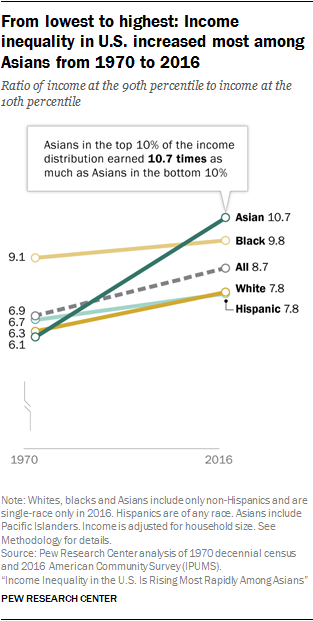

FROM LOWEST TO HIGHEST: INCOME INEQUALITY IN US INCREASED MOST AMONG ASIANS FROM 1970 TO 2016
Source: Pew Social and Demographic Trends
Asian American Wage Discrimination means something entirely different than what it mean fifty years ago. According to the graph above, in 1970, the wage range for Asians were the smallest, with workers within the top 10% of the income distribution being only 6.1 times more than that of the workers within the bottom 10%. This changed greatly, as by 2016, the top 10% of Asian workers earned as much as 10.7 times as those Asians in the bottom 10%. This graph clearly shows how much Asian movements for racial and social justice have changed employers perspectives on the value of people with Asian heritage. Below is a table from the Pew Center regarding the median household income differences between US Asians and the general public in 2010 (Pew Social and Demographic Trends, 2018):
| Group | Median Household Income | College Degree or Better |
|---|---|---|
| US Asians | $66,000 | 49% |
| General Public | $49,800 | 28% |